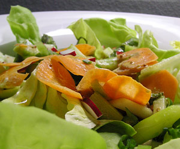

Reichlich garnierter Frühlingssalat
4,5 von 6Einen Kopfsalat waschen und in mundgerechte Stücke schneiden. Radisschen, eine halbe Biogurke, etwas Karotten und einige al dente gekochte grüne Spargeln mit dem Salat auf dem Teller anrichten und mit Sauce beträufeln.
